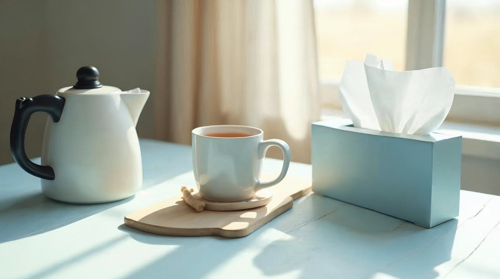
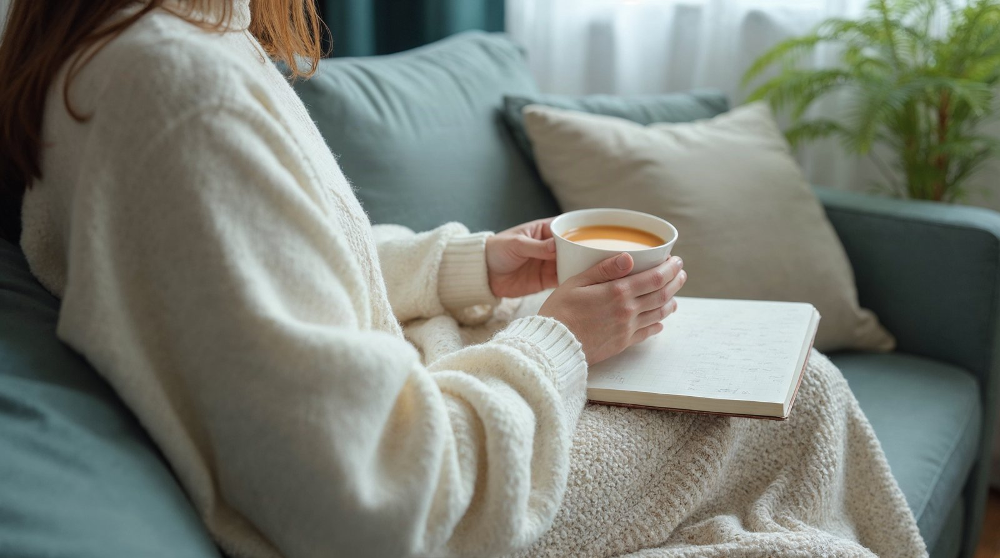
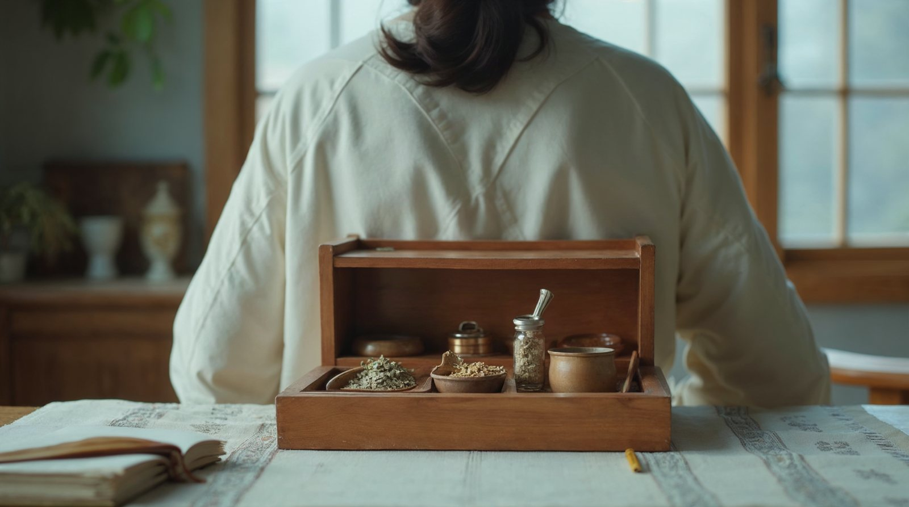
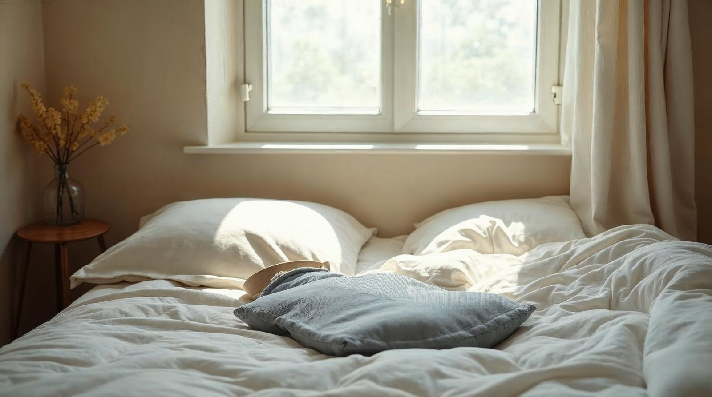
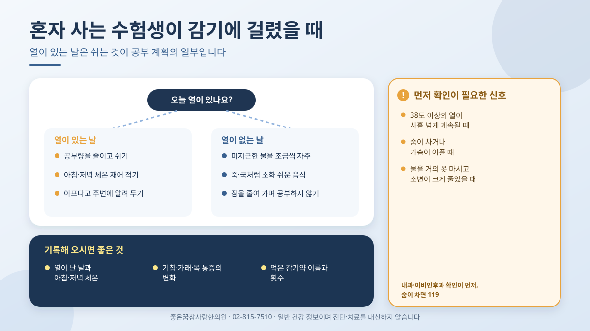

이종호 한의사 감수좋은꿈참사랑한의원 대표원장 (한의사 면허번호 19769)발행 2026-11-24 · 수정 2026-11-26
이 글의 차례
- 왜 이런 불편이 생길 수 있나요
- 왜 혼자 지내면 감기가 더 길어지기 쉬울까요?
- 몸 상태에 따라 공부량은 이렇게 나눠 보세요
- 감기와 비슷해 보이는 경우는 어떻게 구별하나요?
- 상황별 예시
- 스스로 점검해 보세요
- 먼저 이렇게 여쭙니다
- 일상에서 먼저 해 볼 수 있는 것
- 혼자 지내는 방, 미리 이렇게 준비해 두세요
- 혼자 아플 때 연락은 어떻게 해 둘까요?
- 아픈 동안 먹는 것은 어떻게 할까요?
- 쉬는 동안 불안할 때는 어떻게 하나요?
- 기침 때문에 밤에 잠을 못 잘 때는?
- 시험이 코앞인데 감기에 걸렸다면?
- 감기에 자주 걸린다면 생활을 점검해 보세요
- 감기 뒤 회복기는 이렇게 보내세요
- 한의원에서 함께 살필 수 있는 경우
- 첫 진료는 이렇게 진행됩니다
- 이렇게 기록해 오시면 상담이 쉬워집니다
- 이런 증상은 먼저 확인이 필요합니다
열이 있는 날은 공부량을 과감히 줄이고 물과 소화 쉬운 음식으로 쉬는 것이 오히려 공부 흐름을 지키는 방법입니다. 고시원이나 원룸에서 혼자 지내는 수험생은 감기에 걸려도 돌봐 줄 사람이 없어, 하루라도 쉬면 뒤처질까 봐 버티다 오래 앓는 분이 많습니다.
혼자 아픈 밤은 몸보다 마음이 더 힘들다는 이야기를 자주 듣습니다. 죽 한 그릇 사다 줄 사람이 없고, 공부는 밀리고, 불안은 커지지요. 그래서 오늘은 "얼마나 쉬어야 하나"를 감으로 정하지 않도록, 몸 상태에 따라 공부와 쉬기를 나누는 기준을 함께 정리해 보려 합니다.
왜 이런 불편이 생길 수 있나요
- 혼자 지내면 끼니와 물을 챙기기 어려워 회복에 필요한 기본이 부족해지기 쉽습니다.
- 아파도 공부를 이어가며 잠을 줄이면 몸이 쉬는 시간이 줄어 감기가 길어지는 경우가 있습니다.
- 좁고 건조한 방은 목과 코를 더 불편하게 하기도 합니다.
- 오랜 수험 생활의 피로가 쌓여 있으면 감기에 자주 걸린다고 느끼는 분이 있습니다.
- 학원과 독서실처럼 사람이 많이 모이는 곳에 오래 머물러 감기에 노출될 기회가 많습니다.
왜 혼자 지내면 감기가 더 길어지기 쉬울까요?
가족과 함께 지낼 때는 누군가 물을 건네고 죽을 끓여 주고, "오늘은 쉬어" 하고 말려 줍니다. 혼자 지내면 이 모든 일을 아픈 내가 직접 해야 해서, 귀찮음에 끼니를 건너뛰고 물도 덜 마시게 되기 쉽습니다.
또 말려 줄 사람이 없으니 열이 조금 내리면 바로 학원에 나가고, 밤늦게까지 밀린 공부를 하게 됩니다. 그렇게 쉬는 시간과 먹는 것이 모두 모자라면 회복이 늦어지고, 회복되기 전에 다시 무리하는 고리가 이어집니다.
그래서 혼자 지내는 분께는 "아플 때 나를 돌봐 줄 사람이 나 하나뿐"이라는 마음으로, 건강할 때 미리 준비해 두고 아플 때는 스스로에게 쉬어도 된다고 허락해 주시라고 말씀드립니다.
몸 상태에 따라 공부량은 이렇게 나눠 보세요
감기에 걸렸다고 모든 날을 쉴 필요는 없지만, 열이 있는 날까지 평소처럼 공부하면 회복이 늦어지기 쉽습니다. 저는 아래처럼 세 단계로 나눠 생각해 보시라고 말씀드립니다.
- 열이 있고 몸살이 심한 날: 공부는 내려놓고 물, 음식, 잠에 집중하기. 누워서 강의를 듣는 것도 쉬는 시간을 빼앗으니 최소한으로
- 열은 내렸지만 기침과 피로가 남은 날: 평소 공부량의 절반 정도로, 집이나 가까운 곳에서 복습 위주로
- 기침이 조금 남고 기운이 돌아온 날: 평소 일정으로 돌아가되 밤샘은 피하고 잠을 먼저 챙기기
이렇게 기준을 정해 두면 "오늘 쉬어도 되나" 하는 죄책감이 줄어듭니다. 쉬는 날도 계획의 일부라고 생각해 주세요. 쉬는 날을 달력에 표시해 두고, 회복한 뒤 그만큼을 어떻게 나눠 채울지 미리 적어 두면 마음이 훨씬 가볍습니다.
감기와 비슷해 보이는 경우는 어떻게 구별하나요?
콧물, 기침, 목 아픔이 있다고 모두 같은 감기는 아닙니다. 아래처럼 다른 원인을 함께 생각해 봐야 하는 경우도 있습니다.
- 열이 높고 온몸이 심하게 쑤시며 갑자기 시작되었다면 독감일 가능성도 있어 병원 확인이 먼저입니다.
- 열 없이 맑은 콧물과 재채기가 아침저녁으로 반복된다면 비염 쪽을 함께 생각합니다.
- 목이 몹시 아프고 침을 삼키기 힘들며 열이 높다면 목 안을 직접 봐야 할 수 있습니다.
- 기침이 2주 넘게 이어지거나 가래 색이 짙어진다면 다른 원인이 없는지 확인합니다.
감기 증상이 있으면서 시험이나 중요한 일정이 가깝다면, 혼자 판단하기보다 가까운 내과나 이비인후과에서 먼저 확인받는 것이 마음도 편합니다.
상황별 예시
- 예를 들어 고시원 방에서 밤새 열이 나고 아침에 일어나기 힘든 경우, 학원 가는 것을 하루 쉬고 물과 죽을 챙기는 것이 먼저입니다. 그날 들을 강의는 회복한 뒤 배속을 조절해 들어도 됩니다.
- 예를 들어 열은 내렸는데 기침 때문에 독서실에서 눈치가 보이는 경우, 이틀 정도는 방이나 사람이 적은 곳에서 복습 위주로 공부하는 것을 권합니다. 나도 덜 지치고 주변 사람도 편합니다.
- 예를 들어 감기 증상이 가라앉고 나서도 일주일 넘게 아침에 몸이 무겁고 오후에 금방 지치는 경우, 회복이 덜 된 채로 다시 무리하고 있는 것일 수 있습니다. 잠과 끼니를 먼저 점검해 보세요.
스스로 점검해 보세요
- 열이 있는데도 학원이나 독서실에 나가고 있다
- 하루에 마신 물이 컵으로 다섯 잔이 안 된다
- 아픈 동안 끼니를 하루 한 번 이하로 먹었다
- 기침 때문에 밤에 자주 깬다
- 감기 증상이 가라앉고도 일주일 넘게 피로가 남아 있다
- 올해 들어 감기에 세 번 넘게 걸렸다
특히 열이 있는데도 나가고 있거나 물과 끼니가 크게 모자란 날이 있다면, 오늘 하루라도 공부를 내려놓고 회복에 시간을 써 주세요. 하루를 아끼려다 일주일을 앓는 경우가 적지 않습니다.
해당되는 항목이 많을수록 쉬는 것과 먹는 것이 부족하다는 신호입니다. 감기 뒤 피로와 기침이 오래 남는다면 진료 때 이 목록을 함께 보며 이야기를 나누면 좋습니다.

먼저 이렇게 여쭙니다
- 열이 있나요, 몇 도까지 올랐나요?
- 기침이나 가래, 목 통증이 있나요?
- 끼니와 물은 챙기고 있나요?
- 얼마나 오래 증상이 이어지고 있나요?
- 가까이에서 도움을 부탁할 수 있는 사람이 있나요?
- 지내는 방이 건조하거나 춥지는 않은가요?
도움을 부탁할 사람이 있는지 여쭙는 것은, 혼자 지내는 분일수록 아플 때 물과 음식을 챙기는 일 자체가 버겁기 때문입니다. 지내는 환경을 알아야 현실적인 회복 계획을 함께 세울 수 있습니다.

일상에서 먼저 해 볼 수 있는 것
- 열이 있는 날은 공부량을 줄이고 충분히 쉬기
- 미지근한 물을 조금씩 자주 마시기
- 죽이나 국처럼 소화가 쉬운 음식 미리 사 두기
- 가족이나 친구에게 아프다는 사실을 알려 두기
- 열이 나는 날은 아침·저녁으로 체온을 재어 적어 두기
- 젖은 수건을 방에 널어 공기를 촉촉하게 하기
- 기침이 있으면 학원이나 독서실에서는 마스크 쓰기
혼자 지내는 방, 미리 이렇게 준비해 두세요
아프고 나서 준비하려면 몸이 따라 주지 않습니다. 건강할 때 작은 상자 하나에 아래 것들을 모아 두면 갑자기 아플 때 훨씬 덜 막막합니다.
- 체온계와 평소 먹는 해열진통제(약사와 상의해 고른 것)
- 생수 몇 병과 전자레인지에 데우는 죽이나 누룽지
- 마스크, 휴지, 목을 감쌀 얇은 목도리
- 가까운 내과, 약국, 한의원의 진료 시간을 적어 둔 메모
배달 앱이나 장보기 앱에 죽, 생수, 과일을 미리 담아 두면 아픈 날 몇 번의 터치로 받을 수 있습니다. 고시원처럼 조리가 어려운 곳이라면 데우지 않고 먹을 수 있는 두유나 바나나도 함께 챙겨 두세요.
혼자 아플 때 연락은 어떻게 해 둘까요?
아픈 사실을 누군가 알고 있다는 것만으로도 마음이 한결 놓입니다. 가족이 멀리 있어도 하루 한 번 안부를 주고받기로 정해 두면, 상태가 나빠졌을 때 알아차릴 사람이 생깁니다.
- 가족이나 가까운 친구에게 아프다는 사실과 지금 체온 알리기
- 같은 학원이나 스터디 친구에게 필요한 물건을 부탁하기
- 밤에도 문을 여는 근처 병원과 약국을 미리 찾아 두기
- 휴대폰 긴급 연락처에 가족 번호 등록해 두기
아픈 동안 먹는 것은 어떻게 할까요?
열이 나고 입맛이 없을 때는 많이 먹기보다 자주, 조금씩 먹는 것이 좋습니다. 특히 물은 열과 땀으로 빠져나가는 만큼 평소보다 더 챙겨야 합니다.
- 미지근한 물이나 보리차를 한 시간에 몇 모금씩
- 죽, 미음, 계란국, 두부처럼 부드럽고 따뜻한 음식
- 바나나나 사과처럼 씹기 편한 과일
- 기름진 배달 음식과 차가운 음료, 술은 회복될 때까지 미루기
입맛이 전혀 없다면 따뜻한 국물 몇 숟가락이라도 괜찮습니다. 못 먹은 날은 그 사실을 적어 두면 진료 때 회복 흐름을 살피는 데 도움이 됩니다.
쉬는 동안 불안할 때는 어떻게 하나요?
하루를 쉬면 모의고사 점수가 떨어질 것 같고, 다른 사람은 앞서가는 것 같아 불안해지는 것은 자연스러운 마음입니다. 그런데 아픈 몸으로 공부하면 머리에 남는 것이 적고, 감기는 더 길어지기 쉽습니다.
쉬는 날에는 "회복한 뒤 할 일" 목록을 짧게 적어 두고, 공부 생각은 거기 맡겨 두세요. 몸이 조금 나아지면 짧은 강의 하나, 오답 몇 문제처럼 가벼운 것부터 다시 시작하면 흐름을 되찾기 쉽습니다.
기침 때문에 밤에 잠을 못 잘 때는?
감기 가운데 가장 괴로운 것이 밤기침입니다. 누우면 목 뒤로 콧물이 넘어가고 공기가 건조해져 기침이 더 잦아지기 쉽습니다. 잠을 못 자면 다음 날 회복도 늦어지니 밤을 편하게 보내는 방법을 챙겨 두세요.
- 베개를 조금 높여 상체를 살짝 세우고 자기
- 머리맡에 미지근한 물을 두고 기침이 나면 한 모금씩 마시기
- 방이 건조하면 젖은 수건을 널거나 가습기 쓰기
- 잠들기 전 따뜻한 물로 샤워하며 김을 쐬기
- 목에 얇은 수건이나 목도리를 감고 자기
기침 때문에 밤새 거의 못 잤다면 다음 날은 공부량을 더 줄이고 낮에 짧게 눈을 붙이는 것도 괜찮습니다.
시험이 코앞인데 감기에 걸렸다면?
시험을 며칠 앞두고 감기에 걸리면 마음이 가장 급해집니다. 이럴수록 남은 기간을 회복과 마무리로 나눠 쓰는 것이 좋습니다.
- 열이 있는 동안은 새로운 내용보다 정리 노트만 가볍게 훑기
- 가까운 병원에서 먼저 진료를 받고, 시험 일정을 의사에게 알리기
- 처방받은 약은 시험 당일 졸림 같은 영향이 없는지 미리 물어보기
- 시험 전날은 평소 시각에 잠들기
시험 당일에는 따뜻한 물을 담은 물병과 휴지, 마스크를 챙기고, 쉬는 시간마다 물을 조금씩 마셔 목이 마르지 않게 해 주세요.
감기에 자주 걸린다면 생활을 점검해 보세요
한 철에 감기를 몇 번씩 앓는다면 몸이 회복할 틈 없이 지쳐 있다는 신호일 수 있습니다. 아래 가운데 해당되는 것이 있는지 살펴보세요.
- 하루 잠이 여섯 시간보다 짧은 날이 많다
- 끼니를 편의점 음식이나 라면으로 자주 때운다
- 햇빛을 보거나 걷는 시간이 거의 없다
- 손 씻기보다 손 소독제에만 의지하거나 손을 자주 얼굴에 댄다
- 겨울에도 얇게 입고 다녀 몸이 자주 찬다
수험 생활에서 모든 것을 지키기는 어렵지만, 잠과 끼니 두 가지만 챙겨도 감기를 앓는 횟수가 줄었다는 분이 많습니다.
감기 뒤 회복기는 이렇게 보내세요
열이 내리고 나서 곧바로 원래 일정으로 돌아가면 기침과 피로가 오래 남는 경우가 많습니다. 회복기 일주일 정도는 몸을 조금 더 아껴 주세요.
- 밤샘이나 새벽 공부는 피하고 평소보다 30분 일찍 자기
- 하루 세 끼를 거르지 않기
- 찬 바람을 맞을 때는 목과 코를 가리기
- 운동은 가벼운 걷기부터 다시 시작하기
- 독서실에서는 기침이 멎을 때까지 마스크 쓰기
한의학에서는 감기가 지나간 뒤 기운이 덜 회복된 상태에서 무리하면 기침과 피로가 오래 남는다고 봅니다. 그래서 감기 뒤에도 잠과 식사, 땀이 나는 모습을 함께 여쭙습니다.

한의원에서 함께 살필 수 있는 경우
- 감기 뒤 기침이나 피로가 오래가는 경우 잠과 식사, 회복 흐름을 함께 살핍니다.
- 감기에 자주 걸리는 경우 생활 리듬과 피로를 함께 살핍니다.
- 목과 코가 오래 불편한 경우 생활 환경을 함께 살핍니다.
좋은꿈참사랑한의원에서는 모든 분께 맥을 짚으며 증상이 시작된 때와 하루 중 심해지는 시간, 지내는 곳의 환경을 여쭙고, 필요하다고 판단될 때 설진을 더해 살핍니다. 침이나 한약 상담 가운데 지금 상태에 맞는 방법을 정하며, 이비인후과 확인이 먼저 필요한 경우에는 함께 안내합니다.
한약을 상담할 때는 지금 드시는 감기약과 다른 약을 먼저 확인해 겹치지 않게 합니다. 처방받은 약은 그대로 드시고, 임신 중이거나 가능성이 있다면 미리 알려 주세요.
첫 진료는 이렇게 진행됩니다
처음 오시면 접수 뒤 감기가 시작된 날, 지금 남은 증상, 드시는 약, 지내는 방의 환경을 차례로 여쭙습니다. 모든 분께 맥을 짚고, 필요하다고 판단되면 혀의 상태를 살핍니다.
열이 높거나 숨이 차는 등 병원 확인이 먼저 필요하다고 판단되면 그 점을 먼저 말씀드립니다. 함께 살필 수 있는 경우에는 침이나 한약 상담 가운데 지금 상태에 맞는 방법과, 회복기 동안의 공부와 쉬기 계획을 함께 정합니다.

이렇게 기록해 오시면 상담이 쉬워집니다
- 열이 난 날과 아침·저녁 체온
- 기침·가래·목 통증·콧물의 변화
- 하루 동안 마신 물과 먹은 음식
- 복용 중인 감기약 이름과 먹은 횟수
휴대폰 메모에 날짜별로 "11/20 아침 37.8, 저녁 38.2, 죽 두 번, 물 4컵, 기침 밤에 심함"처럼 한 줄씩 적어 두면 충분합니다. 혼자 지내는 분일수록 이 기록이 내 몸 상태를 객관적으로 보는 기준이 되어 줍니다.
이런 증상은 먼저 확인이 필요합니다
- 38도 이상의 열이 사흘 넘게 계속되는 경우
- 숨이 차거나 가슴이 아픈 경우
이런 신호가 있으면 한의원보다 가까운 병원이나 응급실을 먼저 찾으세요.

여쭙는 것
- 열이 있나요, 몇 도까지 올랐나요?
- 기침이나 가래, 목 통증이 있나요?
- 끼니와 물은 챙기고 있나요?
생활에서 해 볼 것
- 열이 있는 날은 공부량을 줄이고 충분히 쉬기
- 미지근한 물을 조금씩 자주 마시기
- 죽이나 국처럼 소화가 쉬운 음식 미리 사 두기
한의원에서 함께 살필 것
- 감기 뒤 기침이나 피로가 오래가는 경우 잠과 식사, 회복 흐름을 함께 살핍니다.
- 감기에 자주 걸리는 경우 생활 리듬과 피로를 함께 살핍니다.
- 목과 코가 오래 불편한 경우 생활 환경을 함께 살핍니다.
먼저 확인이 필요한 신호
- 38도 이상의 열이 사흘 넘게 계속되는 경우
- 숨이 차거나 가슴이 아픈 경우
한눈에 보는 표
| 구분 | 핵심 |
|---|---|
| 여쭙는 것 | 열이 있나요, 몇 도까지 올랐나요? 기침이나 가래, 목 통증이 있나요? |
| 생활에서 해 볼 것 | 열이 있는 날은 공부량을 줄이고 충분히 쉬기 미지근한 물을 조금씩 자주 마시기 |
| 한의원에서 함께 살필 것 | 감기 뒤 기침이나 피로가 오래가는 경우 잠과 식사, 회복 흐름을 함께 살핍니다. 감기에 자주 걸리는 경우 생활 리듬과 피로를 함께 살핍니다. |
| 먼저 확인이 필요한 신호 | 38도 이상의 열이 사흘 넘게 계속되는 경우 숨이 차거나 가슴이 아픈 경우 |
자주 묻는 질문
감기약을 먹으면서 한약을 같이 먹어도 되나요?
드시는 약을 진료 때 모두 알려 주시면 함께 확인해 안내해 드립니다.
공부를 하루 쉬면 너무 불안해요.
아플 때 쉬는 것도 준비의 일부입니다. 짧게 쉬고 회복하면 오래 앓는 것보다 공부 흐름을 지키는 데 도움이 됩니다.
감기가 나은 뒤에도 기침이 오래가면 어떻게 하나요?
감기 뒤 기침이 몇 주 이어지는 분이 있습니다. 기침이 2주 넘게 이어지면 다른 원인은 없는지 병원에서 먼저 확인하시고, 한의원에서는 기침과 잠, 피로를 함께 살펴봅니다.
땀을 푹 내면 감기가 빨리 떨어지나요?
일부러 두꺼운 이불을 덮고 땀을 많이 내면 오히려 물이 부족해지고 지칠 수 있습니다. 따뜻하게 지내되 물을 충분히 마시며 쉬는 것을 권합니다.
진료 시간은 어떻게 되나요?
좋은꿈참사랑한의원은 평일 09:30~20:00(점심 13:00~14:00), 토·일·공휴일 09:30~15:00에 진료합니다.
좋은꿈참사랑한의원은 재진 때 지난번 이야기부터 이어서 여쭙니다. 진료시간과 예약은 오시는 길에서 확인하세요.
어디서 상담받을 수 있나요?
좋은꿈참사랑한의원은 서울 동작구 만양로2길 2 신성빌딩 3층·5층(서울 동작구 상도동, 7호선 상도역 3번 출구 근처)에 있습니다. 한의사 3명(이종호 대표원장, 조영기 수석진료원장, 정원영 진료원장)이 진료합니다. 진료시간은 평일 09:30~20:00(점심 13:00~14:00), 토·일·공휴일 09:30~15:00이며, 방문 전 전화로 확인을 권합니다. 예약은 네이버 예약, 카카오톡 상담, 전화 02-815-7510로 받습니다.
이 글은 일반적인 건강 정보이며 개인의 진단이나 치료를 대신하지 않습니다. 증상이 있거나 복용 중인 약이 있다면 진료를 통해 확인하세요. 치료 효과는 개인마다 다를 수 있습니다.
작성 기준: 일반적으로 알려져 있는 건강 정보를 참고해 정리했습니다(대표원장 감수). 증상 기록은 1~2주 동안 하루 1회, 비슷한 시간에 적어 오시면 지난 상태와 비교하기 쉽습니다.